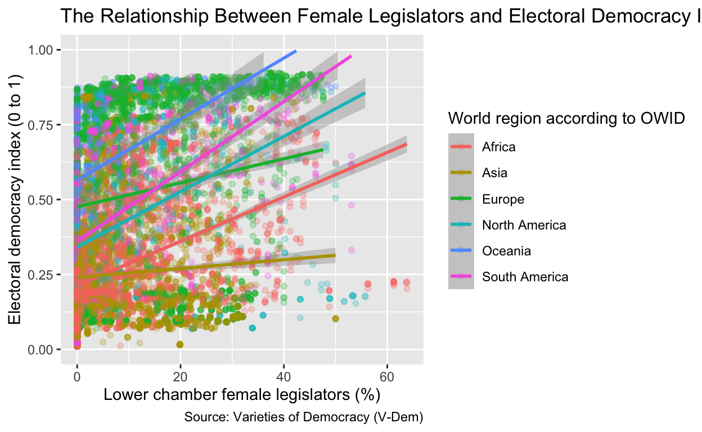
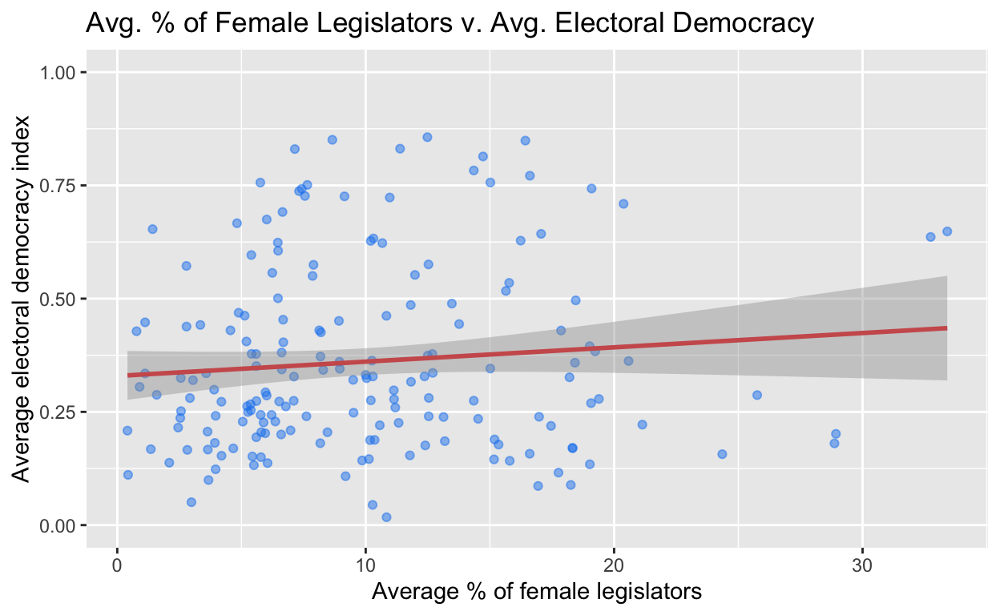
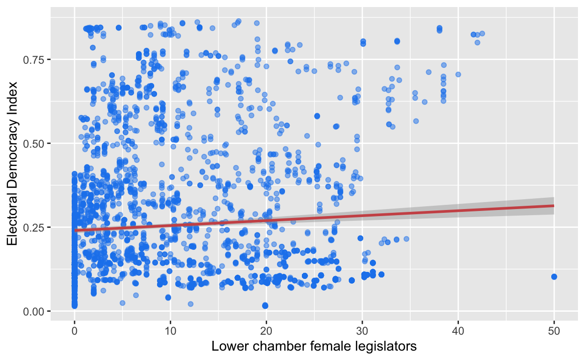
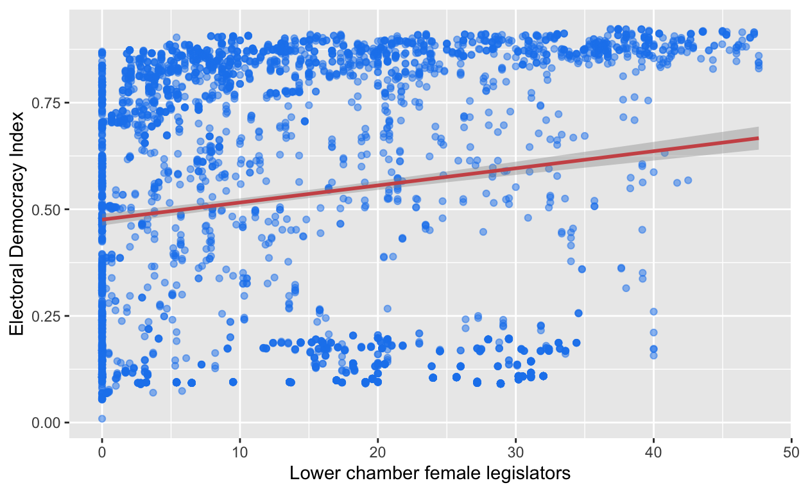

My final project
I am interested in exploring data related to gender equality and how it correlates with regime type. Maybe I could look at women education levels compared to men, or even women’s suffrage in different countries. Potentially, I could look at how women in power or participating in government/politics contributes to democracy.
Do high percentages of women in political positions of power increase electoral democracy? As the percentage of women in a country’s parliament increases, the electoral democracy index increases in a given country. This could be because as women hold political positions of power, they are diversifying representation and participation, and prioritizing social welfare. As representation, participation, and social welfare increases, electoral democracy increases in a given country because it encourages voter engagement and equity as women in parliament act as descriptive and substantive representatives for other women. The amount of women in parliament is my explanatory variable of interest. It is measured in the data set “women_in_power” in the column labeled “Lower chamber female legislators”. The numbers in this variable show the percentage of female legislators within parliament in a given country. The electoral democratic index is my outcome variable of interest. It is measured in the data set “dem_index” in the column labeled “Electoral Democracy Index”. The electoral democracy index is measured on a 0 to 1 scale with 0 being the least democratic and 1 being the most democratic in a given country. One observed pattern across data sets that would support my hypothesis could be the fact that in most countries, as the number of women in parliament increases, the electoral democratic index increases. One observed pattern that would disprove my hypothesis is that some countries have high percentages of females in parliament, but continue to have low scores on the electoral democracy index. For example, females in Rwanda have recently made up around 60% of its parliament, but the electoral democracy index in Rwanda remains low at around 0.2. This could be because quotas were established in Rwanda after the genocide in order to regain political stability as the country’s population was mostly women. With this in mind, one thing that could disprove my hypothesis could be the establishment of quotas that require a percentage of parliament seats to be given to women.
I am looking initially at two separate data sets produced by V-Dem (Varieties of Democracy), and will merge the data sets together when I begin to look at the variables comparatively in more detail. The “women_in_power” data set measures the percentage of women in parliament in a given country across time. The “dem_index” data set measures the electoral democracy index score assigned by V-Dem to a given country across time.
library(readr)
women_in_power <- read_csv("data/share-of-women-in-parliament.csv")
women_in_power |>
head()# A tibble: 6 × 5
Entity Code Year Lower chamber female…¹ World region accordi…²
<chr> <chr> <dbl> <dbl> <chr>
1 Afghanist… AFG 1923 0 Asia
2 Afghanist… AFG 1924 0 Asia
3 Afghanist… AFG 1925 0 Asia
4 Afghanist… AFG 1926 0 Asia
5 Afghanist… AFG 1927 0 Asia
6 Afghanist… AFG 1928 0 Asia
# ℹ abbreviated names: ¹`Lower chamber female legislators`,
# ²`World region according to OWID`# A tibble: 6 × 5
Entity Code Year Electoral Democracy …¹ World region accordi…²
<chr> <chr> <dbl> <dbl> <chr>
1 Afghanist… AFG 1789 0.02 Asia
2 Afghanist… AFG 1790 0.02 Asia
3 Afghanist… AFG 1791 0.02 Asia
4 Afghanist… AFG 1792 0.02 Asia
5 Afghanist… AFG 1793 0.02 Asia
6 Afghanist… AFG 1794 0.02 Asia
# ℹ abbreviated names: ¹`Electoral Democracy Index`,
# ²`World region according to OWID`## Started by joining the data sets together, and did some data wrangling
library(tidyverse)
women_dem_index <- left_join(women_in_power, dem_index,
join_by("Entity" == "Entity", "Code" == "Code", "Year" == "Year", "World region according to OWID" == "World region according to OWID")) |>
select(Entity, Year, `Lower chamber female legislators`, `Electoral Democracy Index`, `World region according to OWID`) |>
na.omit()I then created a graph by looking at how the percentage of female legislators in a country across time compared to the electoral democracy index (assigned by V-Dem).
## Makes a graph called "wdi_plot" that shows the relationship between my two variables of interest
wdi_plot <- ggplot(women_dem_index, aes(x = `Lower chamber female legislators`, y = `Electoral Democracy Index`,
color = `World region according to OWID`)) +
geom_point(alpha = 0.25) +
geom_smooth(method = "lm") +
ylim(c(0, 1)) +
labs(
x = "Lower chamber female legislators (%)",
y = "Electoral democracy index (0 to 1)",
title = "The Relationship Between Female Legislators and Electoral Democracy Index",
caption = "Source: Varieties of Democracy (V-Dem)",
fill = "World Region According to OWID"
)
wdi_plot
One thing that could be contributing to the percentage of lower chamber female legislators in certain countries could be the fact that some countries have electoral quotas or reserved seats. This could be a potential confounder as it is contributing to the amount of female legislators int he country, and it could cause the electoral democracy index to rise as more females are being descriptively represented by their legislators.
In this milestone, I want to run linear regressions and create data visualizations that show the difference between my two variables of interest when countries with quotas are factored in, and when countries with quotas are removed from the model.
First, a linear regression and interpretation of all countries:
## Linear regression of all the countries called "total_regression"
total_regression <- lm(`Electoral Democracy Index` ~ `Lower chamber female legislators`, data = women_dem_index)
total_regression
Call:
lm(formula = `Electoral Democracy Index` ~ `Lower chamber female legislators`,
data = women_dem_index)
Coefficients:
(Intercept)
0.31787
`Lower chamber female legislators`
0.00644 This means that the linear model predicts that when there is 0 percentage points of female legislators, then the model predicts that the average electoral democracy index score is 0.31787 percentage points.
This also means that for every one percentage point increase in female legislators, the model predicts an increase in the electoral democracy index score by 0.00644 percentage points.
In terms of my research question, this means that as the percentage of female legislators increases, the electoral democracy index score also increases.
In order to remove confounders, I had to figure out which countries have electoral quotas in the first place. This includes over 130 countries according to the International IDEA database. Using their database, I began figuring out which countries do not have gender quotas.
## Filtering out the countries that do not have gender electoral quotas and calling it "no_quotas", this will be the countries that do not have ANY gender electoral quotas
no_quotas <- women_dem_index |>
filter(`Entity` == "Afghanistan"| `Entity` == "Azerbaijan" |
`Entity` == "The Bahamas" |
`Entity` == "Bahrain" |
`Entity` == "Barbados" |
`Entity` == "Belarus" |
`Entity` == "Belize" |
`Entity` == "Brunei" |
`Entity` == "Bulgaria" |
`Entity` == "Burma" |
`Entity` == "Cambodia" |
`Entity` == "Cuba" |
`Entity` == "Democratic Republic of Congo" |
`Entity` == "Denmark" |
`Entity` == "Dominica" |
`Entity` == "Estonia" |
`Entity` == "Ethiopia" |
`Entity` == "Fiji" |
`Entity` == "Finland" |
`Entity` == "The Gambia" |
`Entity` == "Georgia" |
`Entity` == "Grenada" |
`Entity` == "Iran" |
`Entity` == "Jamaica" |
`Entity` == "Kiribati" |
`Entity` == "Kuwait" |
`Entity` == "Laos" |
`Entity` == "Latvia" |
`Entity` == "Lebanon" |
`Entity` == "Liechtenstein" |
`Entity` == "Madagascar" |
`Entity` == "Marshall Islands" |
`Entity` == "Nauru" |
`Entity` == "Nigeria" |
`Entity` == "Niue" |
`Entity` == "North Macedonia" |
`Entity` == "Oman" |
`Entity` == "Palau" |
`Entity` == "Qatar" |
`Entity` == "Russia" |
`Entity` == "Saint Kitts and Nevis" |
`Entity` == "Saint Lucia" |
`Entity` == "Saint Vincent and the Grenadines" |
`Entity` == "Seychelles" |
`Entity` == "Singapore" |
`Entity` == "Syria" |
`Entity` == "Tajikistan" |
`Entity` == "Tonga" |
`Entity` == "Trinidad and Tobago" |
`Entity` == "Turkmenistan" |
`Entity` == "Tuvalu" |
`Entity` == "United States" |
`Entity` == "Yemen" |
`Entity` == "Zambia")
no_quotas# A tibble: 3,129 × 5
Entity Year Lower chamber female leg…¹ Electoral Democracy …²
<chr> <dbl> <dbl> <dbl>
1 Afghanistan 1923 0 0.038
2 Afghanistan 1924 0 0.114
3 Afghanistan 1925 0 0.111
4 Afghanistan 1926 0 0.111
5 Afghanistan 1927 0 0.111
6 Afghanistan 1928 0 0.111
7 Afghanistan 1929 0 0.106
8 Afghanistan 1930 0 0.103
9 Afghanistan 1931 0 0.116
10 Afghanistan 1932 0 0.085
# ℹ 3,119 more rows
# ℹ abbreviated names: ¹`Lower chamber female legislators`,
# ²`Electoral Democracy Index`
# ℹ 1 more variable: `World region according to OWID` <chr>Now, I will run a linear regression using the countries that do not have ANY gender electoral quotas.
## Running a linear regression with the countries that don't have quotas
no_quota_regression <- lm(`Electoral Democracy Index` ~ `Lower chamber female legislators`, data = no_quotas)
no_quota_regression
Call:
lm(formula = `Electoral Democracy Index` ~ `Lower chamber female legislators`,
data = no_quotas)
Coefficients:
(Intercept)
0.270663
`Lower chamber female legislators`
0.004347 This means that the linear model predicts that when there is 0 percentage points of female legislators, the average electoral democracy index score is 0.270663 percentage points.
This also means that for every one percentage point increase in female legislators, the model predicts an increase in the electoral democracy index score by 0.004347 percentage points.
In terms of my research question, this means that once again as the percentage of female legislators increases, the electoral democracy index score also increases.
Now, I want visualize the countries that have no electoral quotas through a graph.
no_quota_graph <- no_quotas |>
ggplot(aes(x = `Lower chamber female legislators`,
y = `Electoral Democracy Index`)) +
geom_point(alpha = 0.25, color = "dodgerblue2") +
geom_smooth(method = "lm", color = "indianred3") +
ylim(c(0, 1)) +
labs(
x = "Lower chamber female legislators (%)",
y = "Electoral democracy index (0 to 1)",
title = "The Relationship Between Female Legislators and Electoral Democracy Index",
caption = "Source: Varieties of Democracy (V-Dem)",
fill = "World Region According to OWID"
)
no_quota_graphThis helps to show the positive correlation between percentages of female legislators and electoral democracy index scores.
This data set shows the changes of percentage of female legislators and electoral democracy index score throughout time. Instead, let’s look at the average percentage of female legislators and the electoral democracy index score per country, and see if there is still a positive correlation.
## Finding averages for female legislators across countries
avg_female_legs <- women_dem_index |>
select("Entity", "Lower chamber female legislators", "World region according to OWID") |>
aggregate(`Lower chamber female legislators` ~ Entity, mean, na.rm = TRUE)
## Finding average electoral democracy index score across countries
avg_edi <- women_dem_index |>
select("Entity", "Electoral Democracy Index", "World region according to OWID") |>
aggregate(`Electoral Democracy Index` ~ Entity, mean, na.rm = TRUE)
## Joining these two data sets together in order to create graph
avg_wdi <- left_join(avg_female_legs, avg_edi, join_by("Entity" == "Entity"))
## Creates nice looking table of what "avg_wdi"
knitr::kable(avg_wdi)| Entity | Lower chamber female legislators | Electoral Democracy Index |
|---|---|---|
| Afghanistan | 5.7845000 | 0.1499875 |
| Albania | 14.3487879 | 0.2747071 |
| Algeria | 4.1975238 | 0.1531619 |
| Angola | 18.3229808 | 0.1707115 |
| Argentina | 11.9834951 | 0.5523398 |
| Armenia | 16.9791579 | 0.2391895 |
| Australia | 7.1476613 | 0.8302097 |
| Austria | 14.7236559 | 0.8139032 |
| Azerbaijan | 15.1656604 | 0.1451604 |
| Bahrain | 5.5000000 | 0.1321714 |
| Bangladesh | 5.7738636 | 0.2434886 |
| Barbados | 5.1277273 | 0.4623636 |
| Belarus | 18.3305660 | 0.1695849 |
| Belgium | 10.9677672 | 0.7232672 |
| Benin | 5.5906563 | 0.3777969 |
| Bhutan | 3.9275000 | 0.1815417 |
| Bolivia | 8.9440187 | 0.3608411 |
| Bosnia and Herzegovina | 11.1915054 | 0.2595161 |
| Botswana | 6.4625625 | 0.6237500 |
| Brazil | 3.3444144 | 0.4419640 |
| Bulgaria | 12.3667797 | 0.3283390 |
| Burkina Faso | 6.6847963 | 0.4036852 |
| Burundi | 21.1351429 | 0.2218333 |
| Cambodia | 11.3258571 | 0.2257286 |
| Cameroon | 13.1331562 | 0.2387500 |
| Canada | 7.5544000 | 0.7266560 |
| Cape Verde | 16.2370638 | 0.6280213 |
| Central African Republic | 5.3664727 | 0.2667818 |
| Chad | 5.7948529 | 0.2049853 |
| Chile | 6.2402000 | 0.5568800 |
| China | 18.2565385 | 0.0886923 |
| Colombia | 5.4066387 | 0.3780420 |
| Comoros | 3.0479375 | 0.3199583 |
| Congo | 6.5983433 | 0.2001493 |
| Costa Rica | 10.6683607 | 0.6226721 |
| Cote d’Ivoire | 5.6012078 | 0.2738182 |
| Croatia | 15.0158750 | 0.3456250 |
| Cuba | 17.4600000 | 0.2190485 |
| Cyprus | 6.6518462 | 0.6913231 |
| Czechia | 15.7750000 | 0.5348400 |
| Democratic Republic of Congo | 5.8891296 | 0.2265556 |
| Democratic Republic of Vietnam | 5.0500000 | 0.2284000 |
| Denmark | 16.4265854 | 0.8488943 |
| Djibouti | 4.6712658 | 0.1694051 |
| Dominican Republic | 8.2898246 | 0.3425614 |
| East Germany | 28.8690476 | 0.1804048 |
| East Timor | 33.4104545 | 0.6484091 |
| Ecuador | 8.1307273 | 0.4300091 |
| Egypt | 3.6456436 | 0.1667327 |
| El Salvador | 7.1025664 | 0.2744690 |
| Equatorial Guinea | 10.1311186 | 0.1458475 |
| Eritrea | 9.1904762 | 0.1079524 |
| Estonia | 17.8631731 | 0.4296250 |
| Eswatini | 6.0496607 | 0.1369286 |
| Ethiopia | 9.8570267 | 0.1426800 |
| Fiji | 2.5582692 | 0.3247404 |
| Finland | 20.3800000 | 0.7092720 |
| France | 7.3180672 | 0.7373109 |
| Gabon | 7.6135190 | 0.2402785 |
| Gambia | 2.5368512 | 0.2364463 |
| Georgia | 14.5263810 | 0.2346000 |
| Germany | 17.0605882 | 0.6430441 |
| Ghana | 7.8613846 | 0.5501731 |
| Greece | 5.3963107 | 0.5962427 |
| Guatemala | 4.1919658 | 0.2724103 |
| Guinea | 13.1850000 | 0.1853538 |
| Guinea-Bissau | 12.5391837 | 0.2807551 |
| Guyana | 12.6987273 | 0.3361091 |
| Haiti | 2.4512621 | 0.2153301 |
| Honduras | 8.9570270 | 0.3451892 |
| Hong Kong | 5.9560000 | 0.2027440 |
| Hungary | 12.6828302 | 0.3777830 |
| Iceland | 14.3501961 | 0.7830000 |
| India | 4.5559836 | 0.4299754 |
| Indonesia | 10.2545000 | 0.3632125 |
| Iran | 2.0945794 | 0.1377103 |
| Iraq | 8.1712644 | 0.1808276 |
| Ireland | 5.7587200 | 0.7562160 |
| Israel | 10.2028090 | 0.6274157 |
| Italy | 7.8993548 | 0.5746694 |
| Jamaica | 6.6759223 | 0.4535049 |
| Japan | 2.7840000 | 0.5722240 |
| Jordan | 2.8200000 | 0.1661310 |
| Kazakhstan | 16.6012264 | 0.1575660 |
| Kenya | 3.6343846 | 0.2064701 |
| Kosovo | 32.7418182 | 0.6361818 |
| Kuwait | 1.5869231 | 0.2877115 |
| Kyrgyzstan | 15.1869811 | 0.1891604 |
| Laos | 11.7795313 | 0.1539531 |
| Latvia | 20.5808989 | 0.3623258 |
| Lebanon | 1.1204854 | 0.3348058 |
| Lesotho | 9.4960448 | 0.3206567 |
| Liberia | 2.9256333 | 0.2804750 |
| Libya | 3.9578125 | 0.1232500 |
| Lithuania | 19.0151042 | 0.3950521 |
| Luxembourg | 12.4837500 | 0.8564125 |
| Madagascar | 5.9682740 | 0.2931370 |
| Malawi | 5.5950424 | 0.1939831 |
| Malaysia | 6.0141096 | 0.2860822 |
| Maldives | 3.9608955 | 0.2413731 |
| Mali | 6.6226984 | 0.3435556 |
| Malta | 7.4250820 | 0.7423607 |
| Mauritania | 6.5192063 | 0.2729048 |
| Mauritius | 6.4744675 | 0.6057532 |
| Mexico | 10.0358678 | 0.3243719 |
| Moldova | 19.3871739 | 0.2785435 |
| Mongolia | 11.8239604 | 0.3164752 |
| Montenegro | 18.4547368 | 0.4961579 |
| Morocco | 6.9760000 | 0.2091273 |
| Mozambique | 25.7592500 | 0.2870577 |
| Myanmar | 2.5662963 | 0.2516296 |
| Namibia | 10.2072165 | 0.2754433 |
| Nepal | 11.1315517 | 0.2976207 |
| Netherlands | 15.0189076 | 0.7563950 |
| New Zealand | 11.3840000 | 0.8310320 |
| Nicaragua | 9.5106780 | 0.2481610 |
| Niger | 6.6178367 | 0.3809184 |
| Nigeria | 4.8852593 | 0.4688519 |
| North Korea | 16.9396104 | 0.0864286 |
| North Macedonia | 12.5359259 | 0.2402593 |
| Norway | 16.6100826 | 0.7713306 |
| Oman | 1.3504762 | 0.1676190 |
| Pakistan | 6.3622727 | 0.2287045 |
| Panama | 5.1992241 | 0.4054224 |
| Papua New Guinea | 0.7768919 | 0.4280000 |
| Paraguay | 3.8991150 | 0.2989735 |
| Peru | 8.1965686 | 0.4256176 |
| Philippines | 7.1130973 | 0.3279292 |
| Poland | 13.7624242 | 0.4438586 |
| Portugal | 8.9228448 | 0.4508621 |
| Qatar | 2.9847368 | 0.0505789 |
| Republic of Vietnam | 0.9000000 | 0.3052222 |
| Romania | 10.2886555 | 0.3282101 |
| Russia | 15.3491429 | 0.1778381 |
| Rwanda | 28.9268000 | 0.2015091 |
| Sao Tome and Principe | 11.8135192 | 0.4858846 |
| Saudi Arabia | 10.8409091 | 0.0174091 |
| Senegal | 13.4681392 | 0.4890253 |
| Serbia | 10.5676522 | 0.2203913 |
| Seychelles | 18.2027761 | 0.3263881 |
| Sierra Leone | 8.1805349 | 0.3721395 |
| Singapore | 5.2616260 | 0.2496829 |
| Slovakia | 15.6435000 | 0.5170500 |
| Slovenia | 12.4967010 | 0.3742165 |
| Solomon Islands | 1.1203175 | 0.4476825 |
| Somalia | 8.4606383 | 0.2049574 |
| South Africa | 10.0010328 | 0.3315410 |
| South Korea | 6.4690909 | 0.5008442 |
| South Sudan | 12.3976786 | 0.1759464 |
| Spain | 10.8354867 | 0.4620973 |
| Sri Lanka | 2.7878400 | 0.4383680 |
| Sudan | 10.1742000 | 0.1876600 |
| Suriname | 10.3127143 | 0.6328714 |
| Sweden | 19.0932800 | 0.7430800 |
| Switzerland | 9.1456800 | 0.7258160 |
| Syria | 5.4379310 | 0.1515747 |
| Taiwan | 19.2387467 | 0.3836400 |
| Tajikistan | 15.7972642 | 0.1420000 |
| Tanzania | 18.4235000 | 0.3585667 |
| Thailand | 5.2297368 | 0.2624079 |
| Togo | 6.7861385 | 0.2620308 |
| Trinidad and Tobago | 12.5271429 | 0.5755119 |
| Tunisia | 11.1421538 | 0.2779077 |
| Turkey | 3.5773684 | 0.3351754 |
| Turkmenistan | 17.7596190 | 0.1158762 |
| Uganda | 10.3591809 | 0.1880851 |
| Ukraine | 19.0710127 | 0.2692911 |
| United Arab Emirates | 10.2777778 | 0.0446667 |
| United Kingdom | 7.6510400 | 0.7511120 |
| United States | 6.0160800 | 0.6747200 |
| Uruguay | 4.8210619 | 0.6664867 |
| Uzbekistan | 19.0221739 | 0.1342609 |
| Vanuatu | 1.4232000 | 0.6534400 |
| Venezuela | 5.5970435 | 0.3511739 |
| Vietnam | 24.3524490 | 0.1565918 |
| West Germany | 8.6571429 | 0.8507143 |
| Yemen | 0.4104545 | 0.2086136 |
| Yemen Arab Republic | 0.4352941 | 0.1110000 |
| Yemen People’s Republic | 3.6731707 | 0.0995122 |
| Zambia | 5.3798687 | 0.2533636 |
| Zimbabwe | 6.2103760 | 0.2433120 |
Now, visualizing this tibble in a graph.
## Making a graph called "avg_wdi_plot" which takes the table created above and puts it into graph form
avg_wdi_plot <- ggplot(avg_wdi, aes(
x = `Lower chamber female legislators`,
y = `Electoral Democracy Index`
)) +
geom_point(alpha = 0.5, color = "dodgerblue2") +
geom_smooth(method = "lm", color = "indianred") +
ylim(c(0, 1)) +
labs(
x = "Average % of female legislators",
y = "Average electoral democracy index",
title = "Avg. % of Female Legislators v. Avg. Electoral Democracy"
)
avg_wdi_plot
There still is a positive correlation (just a little less obvious than before).
Running a linear regression to get some concrete numbers:
avg_wdi_regression <- lm(`Electoral Democracy Index` ~ `Lower chamber female legislators`, data = avg_wdi)
avg_wdi_regression
Call:
lm(formula = `Electoral Democracy Index` ~ `Lower chamber female legislators`,
data = avg_wdi)
Coefficients:
(Intercept)
0.32926
`Lower chamber female legislators`
0.00316 This means that the linear model predicts that when there is 0 percentage points of female legislators, the average electoral democracy index score is 0.32926 percentage points.
This also means that for every one percentage point increase in female legislators, the model predicts an increase in the electoral democracy index score by 0.00316 percentage points.
In terms of my research question, this means that once again as the percentage of female legislators increases, the electoral democracy index score also increases.
## Filtering to only Asian countries
women_dem_index_asia <- women_dem_index |>
filter(`World region according to OWID` == "Asia")
## Creating the graph
wdi_plot_asia <- ggplot(women_dem_index_asia, aes(x = `Lower chamber female legislators`,
y = `Electoral Democracy Index`)) +
geom_point(alpha = 0.5, color = "dodgerblue2") +
geom_smooth(method = "lm", color = "indianred3")
wdi_plot_asia
## Filtering to only European countries
women_dem_index_euro <- women_dem_index |>
filter(`World region according to OWID` == "Europe")
## Creating the graph
wdi_plot_euro <- ggplot(women_dem_index_euro, aes(x = `Lower chamber female legislators`,
y = `Electoral Democracy Index`)) +
geom_point(alpha = 0.5, color = "dodgerblue2") +
geom_smooth(method = "lm", color = "indianred3")
wdi_plot_euro